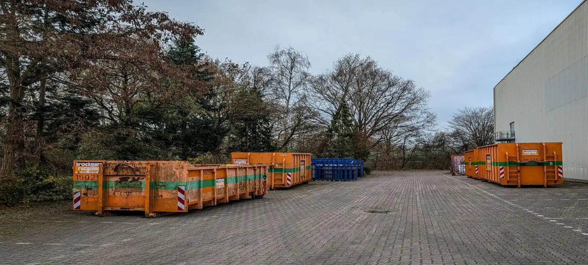
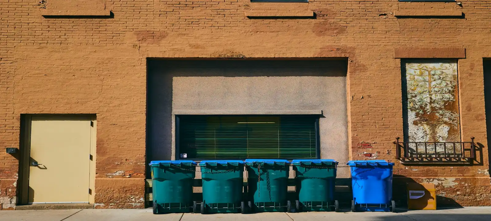

Skip Bin Hire Services Available Across Launceston
Household Skip Bins
Many homeowners use skip bin Launceston services when clearing garages, decluttering spare rooms, preparing a property for sale, or removing unwanted furniture. Household skip bins provide a practical way to manage larger volumes of waste that cannot fit into standard council bins. Whether you are tackling a weekend cleanup or a larger home project, skip bin hire Launceston Tasmania offers a convenient solution for residential rubbish removal.
Green Waste Skip Bins
Garden maintenance can quickly generate large amounts of branches, leaves, grass clippings, shrubs, and other organic materials. Green waste skip bins are commonly used after landscaping projects, seasonal yard cleanups, and storm damage removal. Separating green waste from mixed rubbish may also help reduce overall skip bin hire Launceston cost depending on the materials being disposed of.
Renovation & Construction Skip Bins
Renovation projects often create bulky waste that requires dedicated disposal. Materials such as timber, plasterboard, tiles, bricks, and demolition debris can quickly accumulate during bathroom upgrades, kitchen renovations, and home extensions. Skip bin Launceston services help keep worksites organised while providing a safer and more efficient way to manage construction waste.
Commercial & Industrial Skip Bins
Businesses regularly use skip bin hire Launceston Tasmania services for office cleanouts, warehouse maintenance, retail refurbishments, and ongoing waste management requirements. Commercial skip bins help businesses handle larger waste volumes without disrupting day-to-day operations.
Property & Rental Cleanup Skip Bins
Property managers, landlords, and homeowners often require skip bins when preparing properties for new tenants or completing end-of-lease cleanouts. These projects frequently involve mixed household rubbish, damaged furniture, old appliances, and outdoor waste. A properly sized skip bin helps simplify the cleanup process and reduces the need for multiple disposal trips.
Skip Bin Sizes Available In Launceston
Different projects require different skip bin sizes. Smaller 2m³ and 3m³ bins are commonly used for garden cleanups, household rubbish, and minor renovation work. Medium-sized bins suit larger residential projects, while 8m³ to 12m³ bins are often selected for construction waste, commercial cleanouts, and bulk rubbish removal. Choosing the correct size helps avoid overfilling and can have a significant impact on skip bin hire Launceston prices.
Common Reasons To Hire A Skip Bin
Skip bins are frequently hired during home renovations, moving house, landscaping projects, deceased estate cleanups, rental property turnovers, and major decluttering projects. Many customers also use skip bin Launceston services after storm events when large volumes of green waste and damaged materials need to be removed quickly from residential properties.
What Affects Skip Bin Hire Launceston Prices
Several factors influence skip bin hire Launceston prices, including bin size, waste type, disposal requirements, rental duration, and delivery location. Green waste bins are often more affordable than mixed waste or construction bins because disposal costs are generally lower. Customers searching for cheapest skip bin hire Launceston options can often reduce costs by selecting the correct waste category and avoiding oversized bins that exceed project requirements.
Why Customers Choose Our Skip Bin Launceston Service
Choosing the right skip bin can be difficult when estimating waste volume or comparing available options. We help customers identify suitable bin sizes based on the project type, access conditions, and waste materials involved. Whether you need skip bin hire Launceston Tasmania for a small residential cleanup or a larger construction project, our goal is to make waste removal simpler and easier to organise.

Frequently Asked Questions
How much does skip bin hire Launceston cost?
Skip bin hire Launceston cost varies depending on the bin size, waste category, hire period, and disposal requirements. Green waste bins are generally cheaper than mixed waste and construction bins because processing costs are lower.
What is the cheapest skip bin hire Launceston option?
The cheapest skip bin hire Launceston options are usually smaller bins used for garden waste, household rubbish, and light cleanup projects. Selecting the correct size helps avoid paying for unused bin capacity.
What size skip bin should I choose?
The right size depends on the volume and type of waste being removed. Small bins are suitable for household cleanups and garden waste, while larger bins are commonly used for renovations, furniture disposal, and construction materials. We will help you pick the right skip bins for your need.
Can I dispose of renovation waste in a skip bin?
Yes. Many customers use skip bin Launceston services to remove timber, plasterboard, tiles, bricks, and other renovation materials. Some waste types may require specific disposal arrangements depending on local regulations.
How quickly can a skip bin be delivered in Launceston?
Delivery times depend on bin availability, project requirements, and location. In many cases, skip bin hire Launceston Tasmania services can arrange delivery within a short timeframe for residential and commercial projects.